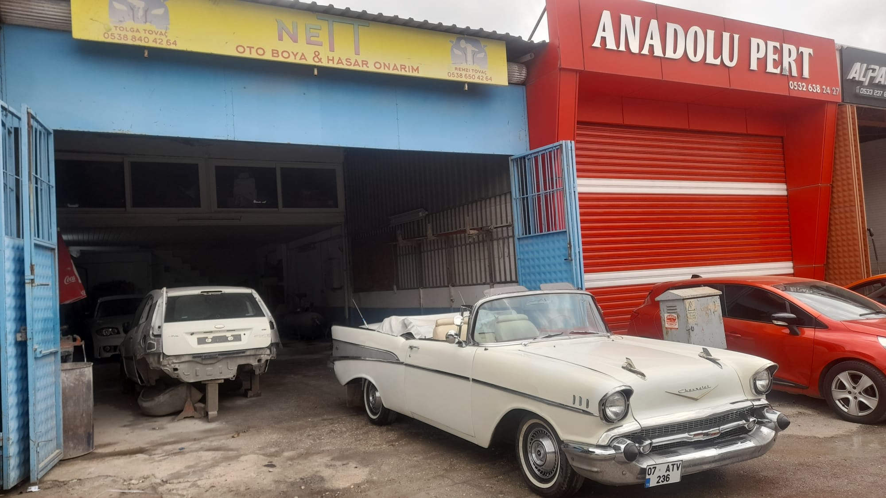

Plastik Aksamda Kusursuzluk
Otomobillerin ön ve arka tamponları, plastik olmaları sebebiyle esnektir ve en sık sürtmeye maruz kalan bölgelerdir. NeTT olarak, plastik yüzeylerin boyanmasında, metal kaportadan çok daha farklı ve özel bir kimyasal altyapı kullanıyoruz.
Tampon boyamalarında en büyük sorun, zamanla boyanın esneyip çatlaması veya kavlamasıdır. Bu sorunun önüne geçmek için uyguladığımız özel "plastik astarı" ve "elastikleştirici vernik" sayesinde, tamponunuz orijinal esnekliğini korurken boya kusursuz bir şekilde tutunur.
İşlem Detayları
- Plastik Onarımı: Yırtık veya kırık tamponların fiber ya da plastik kaynak ile güçlendirilerek onarımı.
- Elastik Astar Uygulaması: Boyanın plastik yüzeye 100% tutunmasını sağlayan özel astar zemin.
- Bölgesel veya Komple: Hasarın boyutuna göre sadece köşe boyaması (yama) veya komple tampon boyaması.
- Aksesuar Boyama: Ayna kapakları, marşpiyeller, spoiler ve kapı çıtalarının gövde rengine veya piyano black (parlak siyah) renge boyanması.
Piyano Black (Piano Black) Detaylar
Araçcınıza daha sportif ve premium bir görünüm katmak isterseniz, difüzör, ayna kapağı, panjur ve jant detaylarınızı fırınlı sistemde kalıcı "Piyano Siyahına" boyayabiliriz.


TAMPON İÇİN TEKLİF ALIN
Çizik veya kırık olan tamponunuzun fotoğrafını bize WhatsApp üzerinden iletin, onarım süresi ve fiyatını hemen söyleyelim.